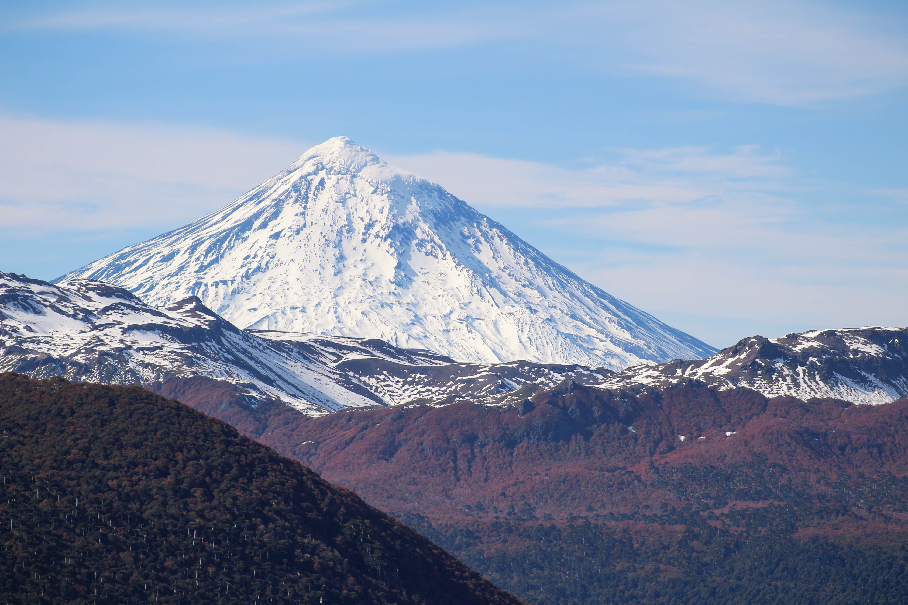
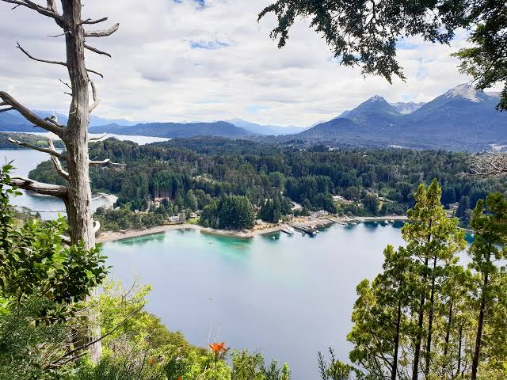
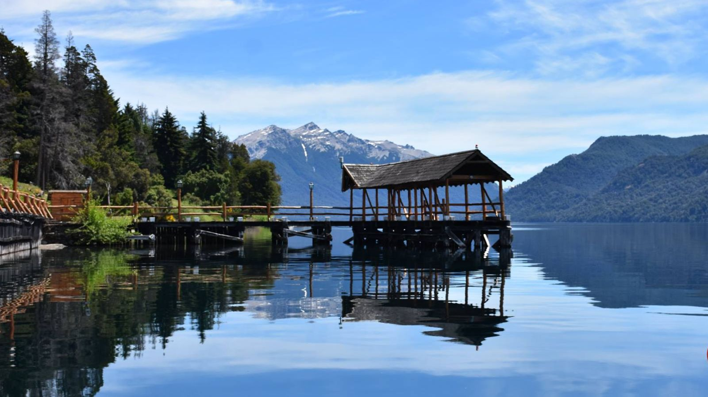
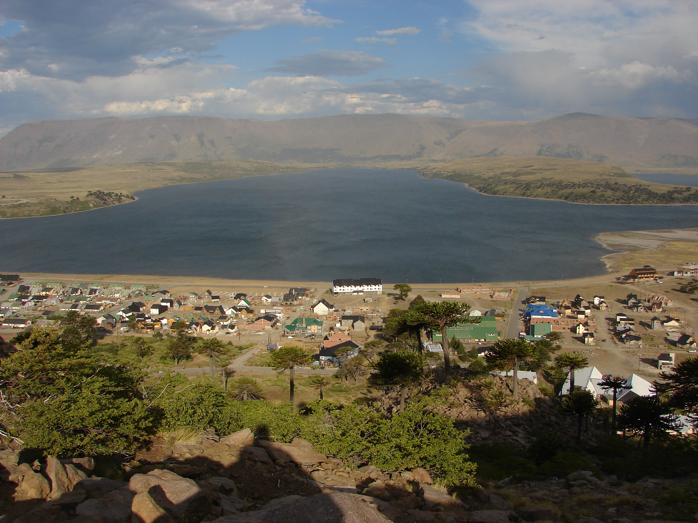
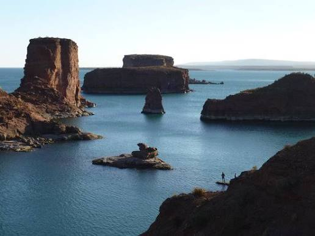

Volcán Lanín
El ícono de la Patagonia neuquina.
Un volcán perfecto, de forma cónica, rodeado de bosques y lagos.
Qué hacer:
- Trekking en la base del volcán
- Visitar el Lago Tromen
- Fotografía de paisajes
- Avistaje de aves

Su silueta es una de las más fotografiadas de Argentina
Villa La Angostura y el Bosque de Arrayanes
Un lugar mágico, lleno de senderos y aguas turquesas.
Qué hacer:
- Visitar el Bosque de Arrayanes
- Recorrer Bahía Brava y Bahía Mansa
- Navegar por el Lago Nahuel Huapi
- Trekking al mirador Belvedere

El color canela de los arrayanes, único en el mundo
San Martín de los Andes y el Lago Lácar
Una ciudad de montaña rodeada de bosques y un lago inmenso.
Qué hacer:
- Playa Catritre y Quila Quina
- Navegación por el Lago Lácar
- Caminata al mirador Bandurrias
- Recorrer la Ruta de los 7 Lagos
 El atardecer desde la costanera del lago
El atardecer desde la costanera del lago
Villa Traful
Un pueblo pequeño, silencioso y rodeado de montañas
Qué hacer:
- Mirador del Viento
- Lago Traful
- Bosque Sumergido (buceo o navegación)

Los arboles duermen bajo el agua
Caviahue - Copahue
Paisajes volcánicos, termas naturales y cascadas únicas en un entorno de montaña
Qué hacer:
- Termas de Copahue
- Salto del Agrio
- Trekking al volcán Copahue
- Recorrer lagunas y cascadas

El lugar mas visitado de Argentina por sus aguas termales
Villa El Chocon
La tierra de los dinosaurios, con paisajes áridos y un lago inmenso
Qué hacer:
- Museo Paleontológico
- Recorrer el lago
- Ver huellas reales de dinosaurios

Un espejo azul que contrasta con las bardas rojizas y crea una vista única